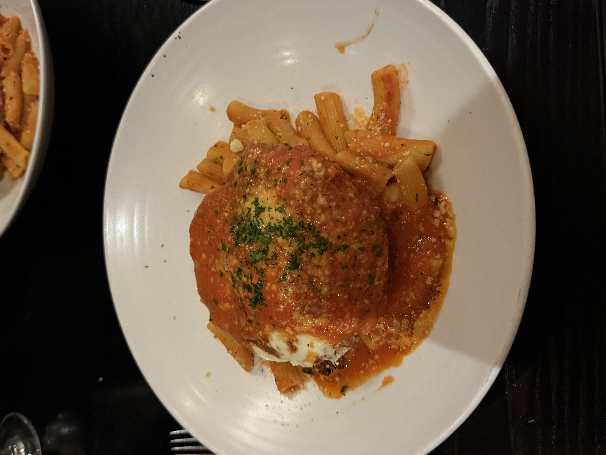
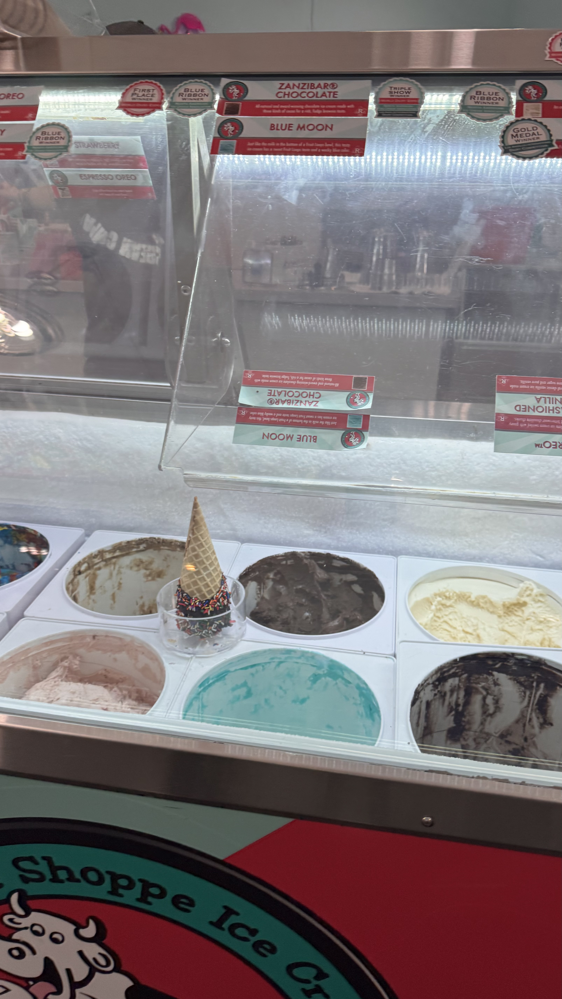

My Favorite Foods
Food Faves
Food brings people together and can reflect different cultures. Growing up, my mom would make the best lasagna and my dad would make the best chicken soup. To me, food carries feelings of nostalgia, and I've had to learn to craft meals myself now that I'm living away from home. This page is dedicated to some of my favorite eats in Madison!
Favorite Dish: Chicken Parmesan
The photo below is a picture of my favorite Chicken Parmesan in Madison! This one is from Cento, right by the Capitol. The marinara sauce, the melted cheese, and the rigatoni on the bottom is something I could eat forever!

Favorite Cuisine: Japanese
I love sushi! My favorite roll would be a spicy tuna tempura roll. This sushi is from Sequoia in Madison! The crispy tuna rice is my favorite, and the spicy edamame was great!

Favorite Dessert: Ice Cream
There’s nothing better than a vanilla cone dipped in chocolate with sprinkles. It's my favorite dessert to have after a long night of homework. The crunchiness of the chocolate over the ice cream is my favorite! This one is from the Chocolate Shoppe on State Street!
